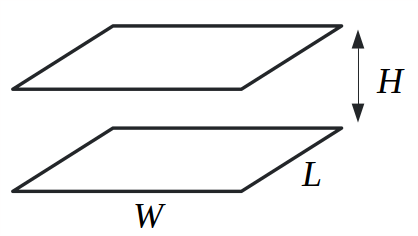
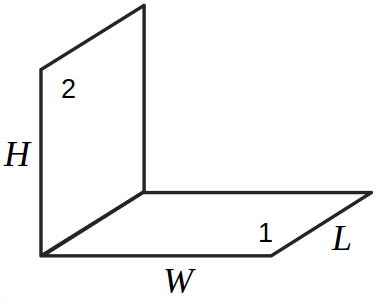
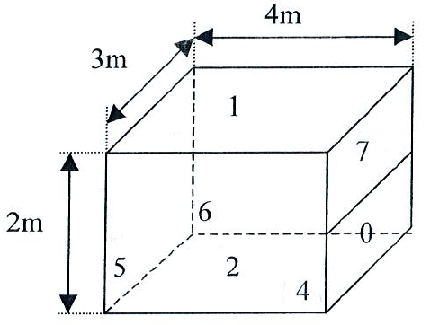

Apports solaires (courtes longueurs d’onde)
Première vidéo sur le rayonnement : comment calculer les apports solaires directs et diffus sur une paroi à partir des données météo. Diapos au format PDF
La chaleur totale que le soleil apporte à une surface d’absorptivité est la somme de l’ensoleillement direct , diffus et réfléchi sur les surfaces voisines . Chacun de ces termes se calcule avec un peu de trigonométrie en fonction de l’angle de la paroi et la position du soleil.
est exprimée ici en W et non en W/m, puisqu’on a multiplié la somme des ensoleillements par la surface .
Echanges radiatifs entre parois (grandes longueurs d’onde)
Vidéo
Deuxième vidéo sur le rayonnement, où on aborde le calcul des températures des parois sous l’effet des échanges radiatifs, et la description de la température radiante moyenne. Diapos au format PDF
Résolution
Pour résoudre un problème d’échange radiatif (grandes longueurs d’onde) entre parois, il faut d’abord connaître tous les facteurs de forme . Les voici dans deux cas particuliers courants:
|  | Deux surfaces parallèles de mêmes dimensions: $$ F_{12} = \frac{1}{\pi x y} \left[ \ln \frac{x_1^2 y_1^2}{x_1^2+y_1^2-1} + 2x\left(y_1 \arctan \frac{x}{y_1}-\arctan x \right) + 2y\left(x_1 \arctan \frac{y}{x_1}-\arctan y \right) \right] $$ $$ \mathrm{avec} \: x_1=\sqrt{1+x^2} \: ; \: y_1=\sqrt{1+y^2} \: ; \: x=W/H \: ; \: y=L/H $$ |
|---|
|  | Deux rectangles adjacents perpendiculaires: $$ F_{12} = \frac{1}{\pi w} \left[ h \arctan \left(\frac{1}{h} \right) + w \arctan \left(\frac{1}{w} \right) - \sqrt{h^2+w^2} \arctan \left(\frac{1}{\sqrt{h^2+w^2}} \right) + \frac{1}{4} \ln \left( a \, b^{w^2} \, c^{h^2}\right) \right]$$ $$ \mathrm{avec} \: a = \frac{(1+h^2)(1+w^2)}{1+h^2+w^2} \: ; \: b = \frac{w^2(1+h^2+w^2)}{(1+w^2)(h^2+w^2)} \: ; \: c = \frac{h^2(1+h^2+w^2)}{(1+w^2)(h^2+w^2)} $$ $$ h=H/L \: ; \: w=W/L $$ |
|---|
On peut ensuite résoudre le problème soit en établissant un schéma électrique équivalent comme montré sur la vidéo, soit en posant un système d’équations linéaires comme décrit ci-dessous.
Le système peut être résolu si chaque paroi a soit une température connue, soit un flux net de chaleur connu (par exemple une paroi adiabatique). On écrit une de ces deux équations pour chaque paroi :
- Soit la température est connue :
- Soit le flux net est connu :
On peut alors poser un système de la forme où est une matrice (=nombre de parois) et est le vecteur des radiosités. Une fois celles-ci connues, on peut utiliser cette formule pour calculer les flux nets et températures initialement inconnues:
Une mise en pratique de cette méthodologie est proposée avec l’exercice ci-dessous.
Exercice
On considère une pièce parallélépipédique aux dimensions suivantes :

- La surface (mur vertical gauche) est une baie vitrée à la température .
- La surface est un radiateur couvrant la moitié de la hauteur du mur de droite, à la température .
- La surface (le sol) est adiabatique.
- Toutes les autres parois sont à la température .
Calculer les pertes radiatives de la pièce par la fenêtre, le flux net radiatif cédé par le radiateur et la température du sol. L’émissivité de chaque surface est et la réflectivité est
Toutes les parois à la température peuvent être considérées comme une seule surface, qu’on désignera avec l’indice 3. Le problème revient donc à un échange radiatif entre 4 surfaces: il faut écrire 4 équations.
Il faut d’abord trouver tous les facteurs de forme. On a besoin d’utiliser les grandes formules ci-dessus 3 fois en tout, pour trouver les valeurs suivantes :
Tous les autres facteurs de forme peuvent être déduits des formules simples: et .
On écrit ensuite les 4 équations correspondant à chaque surface. Sur la surface 0 (le radiateur), la température est connue, ce qui donne :
Sur la surface 2 (le sol), le flux net est connu: la surface est adiabatique donc . On peut donc écrire l’équation:
Les surfaces 3 et 5 ont le même type de condition aux limites que la surface 0 (température connue) donc leur équation est similaire. On aboutit finalement au système linéaire suivant dont la solution est un vecteur contenant les radiosités:
En résolvant ce système, on obtient les valeurs suivantes en W/m pour les radiosités:
La dernière étape est d’utiliser cette formule:
pour trouver les valeurs demandées dans l’énoncé: la température du sol , le flux net du radiateur et le flux net sur la vitre :